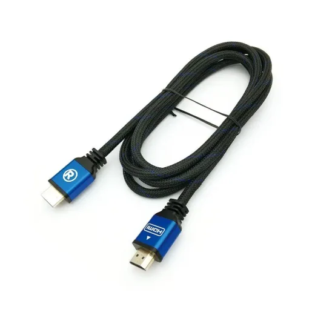

Precio en cada tienda
| Tienda | Precio | Antes | Disponibilidad | |
|---|---|---|---|---|
| RadioShack | L 950 | — | Disponible | Ver en tienda › |
Precios referenciales tomados de cada tienda el 28 de noviembre de 2026. El precio válido es el que muestra la tienda al comprar.
Historial de precio
Lo seguimos desde el 1 de noviembre. Precio más bajo registrado: L 597 en RadioShack (23 de noviembre), L 353 menos que hoy. Cambios de precio registrados: 2.
Otros cargadores y cables HDMI
 Cable giratorio HDMI M-M RadioShack 1503310 6 pies NegroL 600En RadioShack
Cable giratorio HDMI M-M RadioShack 1503310 6 pies NegroL 600En RadioShack Cable HDMI 2.0 4K con Ethernet Macho a Macho Trenzado RadioShack 20cm Negro 1503276L 390En RadioShack
Cable HDMI 2.0 4K con Ethernet Macho a Macho Trenzado RadioShack 20cm Negro 1503276L 390En RadioShack Cable HDMI 2.0 generico 2 metrosL 300En Game Station
Cable HDMI 2.0 generico 2 metrosL 300En Game Station Cable HDMI 2.1 8K con Ethernet RadioShack 1503285 6 pies NegroL 290En RadioShack
Cable HDMI 2.1 8K con Ethernet RadioShack 1503285 6 pies NegroL 290En RadioShack Cable HDMI 2.0 4K RadioShack 9 Pies Negro 1503275L 210En RadioShack
Cable HDMI 2.0 4K RadioShack 9 Pies Negro 1503275L 210En RadioShack Cable HDMI 2.0 RadioShack 1503272 9 PiesL 190En RadioShack
Cable HDMI 2.0 RadioShack 1503272 9 PiesL 190En RadioShack Cable HDMI 2.0 RadioShack 1.8 Mts 1503274L 180En RadioShack
Cable HDMI 2.0 RadioShack 1.8 Mts 1503274L 180En RadioShack Cable HDMI RadioShack 15032711.8m (6 Pies)L 180En RadioShack
Cable HDMI RadioShack 15032711.8m (6 Pies)L 180En RadioShack